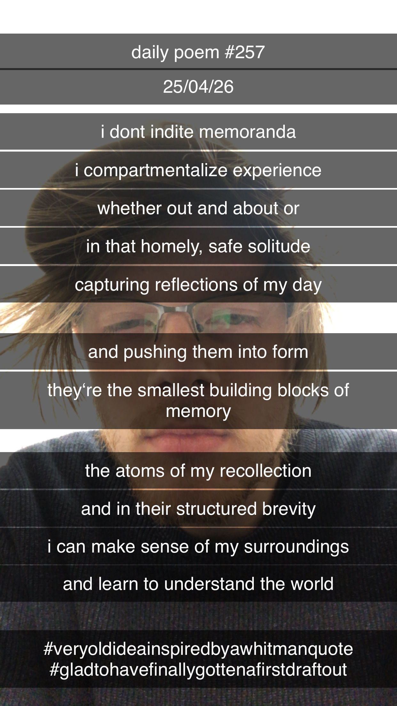

On Inditing Memoranda
I don't indite memoranda –
I compartmentalize experience;
Whether out and about, or
In that homely, safe solitude –
Capturing reflections of my day
And pushing them into form;
They‘re the smallest building blocks of memory,
The atoms of my recollection –
And in their structured brevity
I can make sense of my surroundings –
And learn to understand the world.
